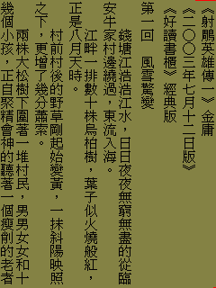
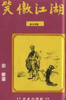
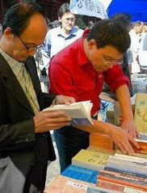

|
|
|
|
|
|
《有關好讀》周劍輝 2008/11/14
好讀網站是推廣中文電子書的公益網站，是不約而來的一群讀友，為自己也為大家，從2001年建站迄今不斷努力不斷貢獻的成果。好讀網站免費提供您的是：
1) 好讀中文直式閱讀軟體
2) 好讀製書程式 mPDB
3) 好讀書櫃﹙整理校正過的好書﹚
註：整理校正過的書還是會有失誤，要靠讀友經年累月的指正勘誤，品質才能越來越好。
不知電子書可以這樣讀，可以這樣好讀，初訪者往往對這樣的成果，有驚為天人的震撼，也有相見恨晚的遺憾，當然不以為然的人也很多。
不論您如何看待好讀網站，若您也覺得沒書可看、沒書想看，或者沒時間可看書的日子是空虛痛苦的，或許您能在好讀網站上找到一兩本愛書，經由好讀之方便，能利用空檔隨時隨地閱讀，讓您的生活更充實、更愉快。
若您對電子書很陌生，沒關係，電子書不是一個路人皆知的東西。您也來對了地方，好讀網站是全球唯一持續在為中文電子書之方便、可用、好用而努力的網站。希望經過大家的同心協力，未來中文電子書能像MP3電子音樂一樣為大家所愛用，就是沒聽過、用過，至少也見過使用的人。
電子書是一個有特定格式的電子檔，能在電腦及手攜閱讀器上，使用一個閱讀軟體打開看的。純文字電子書的檔案非常小，一本十萬字的小說，只不過200KB左右，只是一張普通解析度的相片圖檔的大小，而一本百萬字的巨作，也只不過2MB左右，和一張高解析度的大圖檔差不多。若您的手攜閱讀器有1GB的記憶體，您就至少可裝上五百本書，帶著隨處走，想想那是多方便啊！能不心動嗎？
手攜閱讀器哪裡來？您只要是有一個小螢幕的機子，如常見的PDA、手機、MP3播放器、及遊戲機等，再加上一個閱讀軟體，就可以用了。
沒見過人使用？不妨在台北捷運上、公車上或候車處，多留意一下。若是見到有人左手持小機子，盯著螢幕看，不時左大拇指按一下螢幕左下角，且上下點頭，不必害羞，湊上前看看，若螢幕上顯示的是整頁的直排中文字，那就是一個使用好讀中文直式閱讀軟體的閱讀器。別怕碰釘子，您只要問：那是電子書麼？相信那使用者一定會很高興與您分享，為您解說，並示範使用方法。
我這人天生愛看小說，可是一生天涯飄零，很難攜帶著幾箱的書到處跑。有幾年很可憐，沒有中文書可看，只好改看英文小說，一週至少看一本。好讀的第一版，是我在2001年為我自己，在Palm M105 PDA上寫的。那台PDA當時的價格是七千新台幣，只有8MB的記憶體，也不能插卡，它的PDA功能對我而言完全無用，我看上的是它的輕便，及它那塊160x160的淡青色小正方螢幕。心想若能拿著它看書，那該多方便啊！
可是我試了幾款閱讀軟體，發現不僅不好用，又不好看，不免有點洩氣。當時我就想光是方便還是不夠，還要好讀！拿在手上閱讀的感覺不能比讀實體書差，而且我要看的是小說，能夠直排最好！
怎樣的閱讀軟體才是我要的，我的結論是：「中文閱讀要直式，有章節，有目錄，且每章由新頁開始，有頁的觀念，才比較像實體書，才好讀。」這樣的軟體當時找不到，於是我就自己動手寫了一個，那就是目前很多人愛用的好讀。
機子和軟體解決了，接下來的大問題是書從哪裡來？這個問題說簡單也簡單，說難也非常難。
為什麼說簡單？上網一找，就有成千上萬的網頁電子書，只要一一轉為好讀電子書，不就是有成千上萬本書了嗎？當時我也是這麼想的，於是就找了幾本書來試看看，這才發現問題沒有想像的那麼簡單。
這些看來像書的電子書，讀起來卻痛苦至極。這可不是機子的問題，也不是我的好讀軟體寫得不夠好，而是滿頁簡體字、錯別字，讀至有些地方，甚至覺得上下似不連貫不知所云，應該是漏字，漏段或漏了好幾頁。這樣的電子書我自己都讀不下去，又怎能拿出來與大家分享？
那又能怎麼辦呢？努力再去找，也本本皆如此，真是令人很失望。當時我再也想不出什麼好法子來了，只有一個是放棄，另一個則是我自己將製好的書先看一遍，見錯則改，若有漏失之處，則試看看是否能找到原書來核對補齊。我選擇了後者，一做就是七年，有幾年還是全職在整理校對書，您在好讀網站上常見到的美格騰就是我。
好讀網站上的電子書，若您看過，還看得下去，或看得很欣悅，除了好讀軟體真是好用之外，就是電子書的品質與其他網站相比，要好非常多。為了容易區分品質，我將重新整裡校正過的稱為《經典版》，而按原書逐字核對過的為【典藏版】。但不論哪種版本，您也許還是會見到幾個錯字，一種是校正時疏忽沒看到或沒改到，另一種則是各人對錯字的認定不一，仔細查證起來，卻也是正確的。
然而整理校對書是很花時間的事，我的時間雖然花得多，成果還是有限，我也只能挑比較值得整理校對的，比較沒有爭議的書，如以下幾類：
1) 古典作品
2) 絕版的書
3) 不容易找到的好書
4) 若不是有好讀之方便，您不會有機會去讀，或再讀的書。

像金庸的書，幾乎每個人都讀過；好讀版，因能隨身攜帶，您就比較可能再抽空去欣賞，去重溫舊夢，那就是我希望能提供給大家的。還有像世紀百強，上世紀的一些好書，若不是有好讀，有些人，包括我自己在內，可能這一輩子都沒有機會去看、看到或想看。
雖然如此，偶爾也會接到讀友來信詢問是否可提供或多提供某作者或某類的電子書，讓我啼笑皆非。我又不是孫悟空，吹根頭髮就能將書變出來。若網路上能找得到，還得花幾天整理校對；若網路上根本找不到，則先得找到原書，再掃描輸入、整理校正，這至少要花一個月至半年的時間，除非真是好書，沒有幾個人有意願、有時間這樣做，或應該這樣做。
當然好讀網站自2001年建站以來，就有很多書是讀友們主動提供分享的，其中不少是我從未聽過、見過的。尤其近年來，收到越來越多讀友們寄來分享的書。令我又喜又憂，想偷懶也不成。喜的是越來越多的讀友像我一樣用心，寄來分享的書是經過細心整理校正的，我僅需稍微確定就可製成網頁，放在網站上。憂的是未校正的也不少，讓我不知如何是好。不放，對不起寄書來的讀友；放上，則對不起看書的讀友；要逐本再整理校正，我又哪來這麼多的時間，又對不起我自己。
這七年來好讀網站確實造福了很多的人，讓沒書可看的人有書可看，讓沒書想看的人重拾閱讀的樂趣，也讓更多的人由排拒而至愛上電子書。不時會接到讀友來信表達感謝之意，讓我看了很開心，覺得我花的這番心血是值得的。然而人怕出名豬怕肥，偶爾也會收到一兩封讓我看了很灰心的信，有時很想將好讀網站關了算了。
關閉好讀網站對我而言，只是舉手之勞。但是關閉好讀網站對誰有好處？作者、出版社、日益縮小的讀書群、還是電子書的未來？
許多事情的遊戲規則並非一成不變，隨著科技的進步，使用者需求的改變，以及一群人不斷在灰色地帶嘗試突破，是可以，也終會被改變的。MP3電子音樂就是很好的一個例子。MP3取代了CD，最大的受益者是誰？愛樂者及作曲家。不但愛樂者能夠更方便地享受樂曲，作曲家也多了一個更廣闊的舞臺，讓新起之秀可以隨時站上舞臺，並在網路上自行行銷樂曲。
微軟為什麼人人厭惡？為富不仁是主要的原因。一個千方百計只要不給的公司怎麼會得人心呢？哪天它倒了，相信沒幾個人會為它惋惜。反觀Google為什麼人人喜愛？因為它不斷釋出好東西給大家免費使用，反令人覺得讓它賺錢是應該的，也應該協助它賺錢。得人心者得天下，真是永恆的定律。
電子書呢？Google這幾年不因版權問題而縮手縮腳，反而和美國幾大圖書館合作，每年掃描上百萬本英文書籍。這是多大的資產，對人類將有多大的貢獻！而且時候到時，經Google的努力，遊戲規則也必將改變。新的遊戲規則對大家必然都有利。(註：Google 已於2009年和出版界協商成功，建立了新的遊戲規則。)
在新的遊戲規則未建立之前，有些事情大家心知肚明就好，何必刻意在那上面大作文章，無謂爭議，或惡意阻止一些人對建立遊戲新規則的努力。可是有人居然來信質問：「想請教的是貴站所收錄的電子書，是否經過出版社授權，還是網路上收集或是網友製作的盜版電子書呢？」這很讓我莫明其妙，不知他問話的目的何在？
沒錯，好讀網站上很多書，是從網路上收集，再重新整理校正的。但「盜版」兩字，一般是指將原書大量翻印，出售圖利。好讀網站是這樣的網站嗎？若不是，為什麼要問這樣的問題？用這樣狠毒的字眼？
另外，為何不也去問問每個圖書館，它的書是否都經過出版社授權呢？如果堅持只有付費買的書才能看，那所有的圖書館都應該關掉，好讀網站基本上是一個電子圖書館，也應該關掉。
若好讀網站上每本書都要原作者同意才能放上，這不是強我之所難嗎？不談已作古的，我又不是Google，要上哪裡去請示每一位作者呢？是否比較合理的要求是，若有作者不希望他的書被放在好讀網站上，請親自來信賜告呢？接到作者親自來信，我當然會尊重指示，將書立刻下架。若非作者本人，而是第三者隨意來信騷擾，我目前的態度是置之不理。我能保證的是，至目前為止，我沒有收到任何一位作者親自來信，要求下架的指示。
因手頭正好有書，我在2001年參照原書整理校對了李敖的【北京法源寺】一書。我和李敖非親非故，我在電視上認得他，他並不認識我，當然我也無法事先徵得他的同意。可是很巧，幾年後在台北永康街一家小館與友人聚餐，見李敖進來，便邀他一道同桌進餐，他居然很爽快地答應了。
李敖真是風趣，席間聽他說了幾個令人開懷大笑的小故事。因他也以愛告人出名，我就趁這機會，順便請他看了PDA上我製作的北京法源寺電子書，問他有什麼意見，是否要告我？李敖說：告你有什麼好處？我說：沒有。李敖說：那我告你幹嘛！
席間也談到寫作是否能賺錢，李敖說，台灣的市場很小，要賺錢則不能假手他人，他的書都是李敖出版社自行發行的。他說他的書算暢銷的，每本書至少可賣上五千本。一般的作家，大約幾百本，能賣上千本的就算很不錯了，每本的版稅只有數十元，有名氣的作家稍微多一點。
真如李敖所說，寫本書只能賺新台幣數萬元，純靠寫作為生還真是不容易。而且，如果事先知道寫一本書只是要給、能給幾百個人看，大概沒有幾個人會有意願去寫。如果本本皆如此，怎能出名，怎能突破呢？
況且一刷若只是千本，好不容易盼到賣完，出版社倒了，或不願再印，就成了絕版書。幾年之後，誰還知道、記得有這本書，恐怕連原先辛苦掙來的小名也沒了。
而且現在有名，並不代表數十年之後仍會有名。在2001年我也曾找到幾位老作家，他們的作品在三、四十年前也曾小有名氣，可是如今大概沒幾個人知道。當時他們也樂意提供給我他們的絕版書，授權我放在好讀網站。可是交給我的全是實體書，我實在沒時間及能力逐一轉成電子書，只好敬謝不敏，將書奉還。
再舉一個例，瓊瑤及倪匡的小說在二、三十年前，也曾風光一時。可是，若不是這些作品近年來仍然在網路上流傳，有多少人還會記得他們？有多少年輕學子會知道它們？又有多少人還會去舊書堆、舊書攤上，將這些書找出來看或重看呢？

再說，五十年前金庸的幾部舊版武俠小說，若非兩位讀友，花了幾年的心血，重新掃描校對，請問這些文化資產哪還找得到？哪還看得到？
在好讀網站上看到這些書，因為方便，您也許才會有興趣去一看，或再看。年輕學子也多了一個上網的好去處，減少沉迷於網路遊戲的時間，這樣不是最好嗎？
除了方便，好讀網站的電子書還有一個極大的優點，就是乾淨，沒有灰塵。幾十年前的老書看來就像是昨天出版的一樣，沒人會嫌破嫌髒嫌臭嫌老嫌舊。
英文書籍多半精裝，紙張也好，幾十年的老書，拿在手上，書香仍在。而中文書籍幾乎都是平裝，十年、二十年的舊書，紙張發黃，字體也小，印刷也不如今日之優美，若曾過手多人閱讀，難免又破又爛，除了書痴或做研究的，會有幾個人喜歡翻閱？
近年來，隨著漫畫書、電玩、網路遊戲、DVD的風行，有多少年輕學子仍舊愛看小說、看雜書呢？我的一個外甥，二十好幾，這一輩子還未讀過一本小說。讀書人口越來越少，請問作家還有什麼前途，還有什麼出路？
也許打破傳統出版的迷思，先在網路上求發展，才是現代作家的一條生路。這幾年，大陸有幾位新起作家，就是先在網路上連載作品而大放異采，爭讀者無數之後才出書的。
另外一個迷思是認為電子書會影響實體書的銷路，這也是大錯特錯。書籍就是商品，商品要能行銷成功，就是靠廣告，靠流傳才有人知道。一本爛書，不但實體書難賣，就是免費的電子書也沒有人要看。一本好書，網路就是最好的行銷工具。電子書有人爭相競看，才會出名，出了名，實體書才會有更多的人想買、要買。

不時，我也會收到讀友來信詢問，某書在何處可買得到？最常被問到的是臥龍生的《玉釵盟》。看了這些信，也讓我啼笑皆非。好讀網站是電子書櫃，不是書店，不賣書，而且有些書早已絕版，我也不知道哪可買得到，除非我肯花點時間，上網幫這些讀友查看看。也許未來我可以多加一個服務，若我能查到何處可買到書，我會在該書的網頁上加註：若要購書典藏或送人，請至某某處，或看這裡。
一本好書要風行一時已難，要流行一世、留芳百世更難。中文雖號稱文化淵源攸久，可是古典中文小說與外文在數量上相比，可以說少得可憐。可能原來就少，再加上流傳保留不易，就都失傳了。如果好讀網站在數百年前就存在，也許這些文化資產都能保留下來。
好讀版電子書基本上是一個文字電子檔，為了能快速抓取章節，我加上了一點格式，因而不論檔案有多大，好讀每一章開啟的速度是一樣快的。因為書是大家的文化資產，未來我也會考慮在適當的時候，開放好讀的電子書格式及程式，方便大家廣泛使用。
若您也希望好讀網站能持續發展，您可協助的事很簡單，就是多與親朋好友分享好讀網站的好處。好讀網站雖然已建站七年，使用者遍及全世界，可是每天不小心才找上門來的還是很多。與其相見恨晚，不如早早知道。
雞生蛋、蛋生雞。好讀網站的使用者越多，就會有更多的作者希望能在好讀網站上放書、發表作品，更多的作者在好讀網站上放好書、發表優良作品，好讀網站也會有更多的使用者。這個結果對大家都好。
另外，最重要的一點是，對您喜愛的作家們更應表達支持與愛護，多買些好的作品典藏或送人，作家們才能繼續為大家寫出更好的作品。
若您是作家或有志寫作，想立功立德立言，希望在好讀網站撰寫專欄、發表或連載作品，且不在乎沒稿酬，請隨時和我聯絡。
周劍輝 (美格騰) 2008/11/14
|
|
|
|
|
|
|
|
|
| 搜尋好讀 |
|
好讀第17年了。
有好讀真好，有你也真好。但不知遍及各地的你，究竟有多少。若你從未或很久沒贊助過好讀，請按這裡，贊助好讀美金或人民幣十元，讓我知道你存在。
11/25香港 Dennis C
幾年前由朋友介紹得悉好讀，多年來在旅途中它都帶給我很多樂趣。香港地方狹小，不少書都因地方問題而送人或丟棄，好讀卻帶給了我很多閲讀的方便、亦節省了儲存的位置。衷心多謝各位工作仝人！
11/19 美國紐約 June
發現好讀幾年了，但現在才發現這好讀留言板。抱歉呢，理應更早道謝。身在海外，要看一本中文書不是易事。書店售書種類少，價錢高；圖書館借書種類更少。幸好發現好讀網，可以一解書癮。衷心感謝所有有心人上載和校對。
11/17 大陸 Shirley
偶然發現好讀網這塊寶地真的很驚訝，網絡上有這樣安靜舒適的地方可以閱讀電子書，對我這種資金短缺的學生真的很意外很開心！
11/16 香港 chair chun wai
因為買了Kindle的緣故，所以才發現"好讀"這個地方。感謝"好讀"一直的更新和提供書本給大家。感謝感謝
11/15 香港 mike chan
我認識好讀是因爲kindle。那時中學買了kindle，需要找找電子書，因此在網上發現了好讀。對於繁體字kindle用家，這是個大福音！
11/13 大陸 BerthaR
今天因為Kindle的緣故找書，才發現好讀這個地方。感覺是一方淨土，公益地為書友們獲取知識省下了不少財力，節省了大家的時間：）目前我只是個高中生，提供的也只有十塊錢而已啦。十七年的好讀真是令人敬佩！希望你們知道我的感謝，還有知道更多人的感謝！
11/9 香港 MJ
從小喜愛看書，看書人也許都知道要管理保存書本是不容易的（尤其香港的地方空間更有限）。今年開始嘗試電子書，看看能否接受。因為好讀網的海量書本，小弟所喜愛的黃易＋衛斯理，還有準備開始看的金庸也不用愁了。感謝好讀！
>> 更多
|
|
|